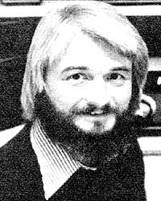
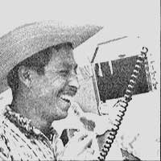

Those of us who want to retreat from the over-development that's taken place in our own rich nations are also well aware that the opposite problem exists in many poorer countries below North America's southern border.
The majority of the world's people would gladly swap their situation for ours . . . and few of us "wealthier" folks would want to retreat all the way back to the 50% infant mortality, insufficient food, and chronic illness still found in some "undeveloped" lands. The choice is not "All technology or none", but rather "Which technologies are appropriate ... both for human beings and for the other inhabitants of our small planet?"
In order to improve the quality of life in less-developed nations, it's usually necessary first to supply the basic physical needs: nutritious food, pure water, and health care. It might not seem that a high technology tool like radio is appropriate during this early stage of the development process, but some recent work in two Central American countries indicates that electronic communication can be of help.
Besides radio's ability to provide a high return-in human terms-for the amount of capital invested, it also has little environmental impact and can be used by folks who aren't able to read or write . . . which is a definite advantage in areas where literacy isn't widespread.
When an earthquake shook Guatemala in February 1976, a group from PLENTY-the relief organization run by The Farm in Summertown, Tennessee-went down to help the Guatemalans rebuild. After the emergency was over, Farm folks remained to work with the local Mayan people on some of the area's longstanding, basic problems.
Among those who stayed were hams from The Farm's radio crew, who used their equipment to keep relief workers in touch with relatives back in Tennessee. Later-as these people became more deeply involved with the problems of the Indians-they sensed other ways that radio could be of value. During the next three years, the Tennessee group helped to bring several new communication systems into existence. Of prime importance were two emergency radios that employed standard CB transceivers.
The first of these citizens' band hookups enabled eight isolated "volcano villages" in the Lake Atitlan region of Guatemala to communicate with clinics and ambulances. "Such a Village Emergency System," says a recent report from PLENTY, "is especially useful because of the limited transportation in the area. Some villages can only be reached by traveling as far as 25 kilometers over volcanic dirt roads . . . and one community is actually up the side of a volcano! Many such settlements are only visited by one or two buses a day and have almost no additional vehicular traffic. Others have no water in the immediate area ... infant mortality rates as high as 50% . . . and reoccurring outbreaks of TB, dysentery, typhoid, and other diseases.
"We found the people in the villages to be intelligent, capable, and anxious to improve their lot . . . but without the money or equipment necessary to do so. We had set up a program of apprentice `Health Promoters' (in training with the nearby clinic) who dispensed medicine and reported serious cases. We installed CB base stations for these people, and through the use of the radios-hundreds of lives have already been saved. With the help of just one inexpensive CB station, the area's overall health statistics have improved greatly."
The second emergency radio system uses CB radios to connect lakeshore villages to clinics, hospitals, and fire departments. In addition, PLENTY's crew helped build a broadcasting facility (owned and operated by local Mayan Indians) which presents educational programs, agricultural information, and bulletins-as well as music-in the area's native language. (The PLENTY radio technicians trained local people to operate and repair all these systems.)
The crew also maintains a daily ham radio lifeline back to the States, which allows two physicians in Tennessee to advise Mayan doctors on difficult medical problems.
Similar things are happening elsewhere. A few hundred miles away-in Puerto Cabezas, Nicaragua-Gary Garriott (WA9FMQ/YN4GG) works with a rural educational project aimed at training "health and nutrition leaders" in 25 Miskito Indian villages. Eight of the clinics are now connected by two-way, 3850 kHz SSB ham communication. The radio is used for medical consultation ... to support the distribution of medicine ... and to relay information on scheduled visits by medical personnel and courses in health and nutrition.
As in Guatemala, most of the Nicaraguan radios are powered by 12-volt car batteries, but one of the sets is charged up with a solar panel ... and more experimentation with alternative energy sources is planned. Gary is also involved with a regional educational radio project which uses a 2.5-KW AM transmitter to broadcast health, nutrition, and agricultural information.
Of course, radio systems require technically skilled people to maintain them. Historically, among the first such people in the industrialized world were the radio experimenters ... the hams. I suspect that history might repeat itself in today's developing nations . . . if amateur radio-in these countries-were to be stimulated by interested governments and by gifts of equipment and parts from us hams in wealthier lands.
To conclude, I'd like to pass on some information I just received from Elmer Osterhoudt . . . whose business-Modern Radio Laboratories (Dept. TMEN, P.O. Box 1477, Garden Grove, California 92642) was mentioned in my last column. It seems that MRL has gotten hordes of catalog requests from MOTHER readers, and Elmer would just like to ask everyone to be patient .. . his little firm is nigh unto buried in mail, and he'll get the catalogs out as soon as possible.
Peace,
Cop Macdonald (VE1BFL)
P.O. Box 2941
Charlottetown
Prince Edward Island
Canada C1A 8C5
New Directions Radio is an international network of radio amateurs concerned with those ways of using ham radio (and related modes of communicating) that promote our own growth as individuals, and which we perceive as helping to create a more aware, more caring, and more responsible human society. We encourage all who share these interests to work with us. A current schedule of on-the-air activities is included in each issue of the bi-monthly New Directions Roundtable Newsletter published by Randy Brink (WD0HNF) and "Bo" Bogardus (W6HSE) as a service to the rest of us. Send one 9-1/2 by 4-inch, self-addressed, stamped envelope (or 25 cents) for each issue desired to Randy Brink, 1095 Western Drive 178C, Colorado Springs, Colorado 80915.
|
 Copthorne Macdonald is the inventor of slow-scan television . . . a method of amateur radio transmission that allows ham operators to both hear and see each other during shortwave broadcasts. |
 A neophyte Mayan CB operator receives some medical youd news. |
|